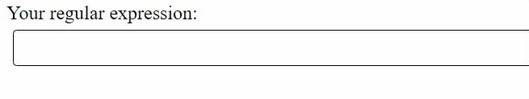
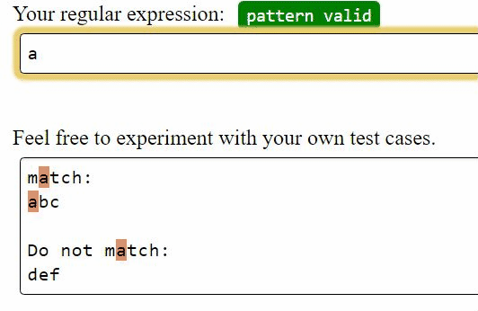
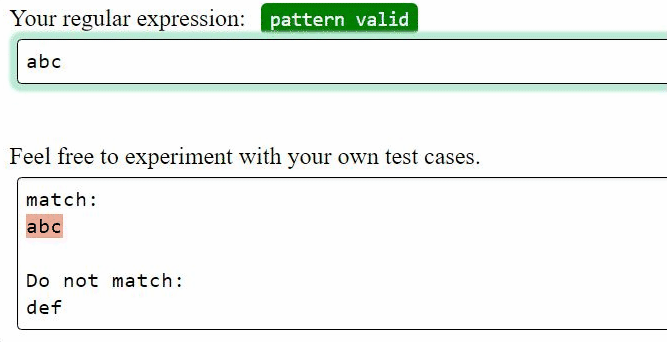
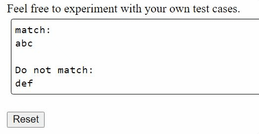
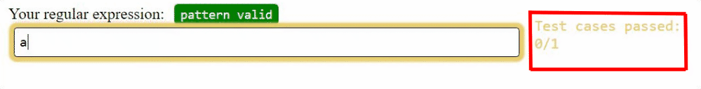
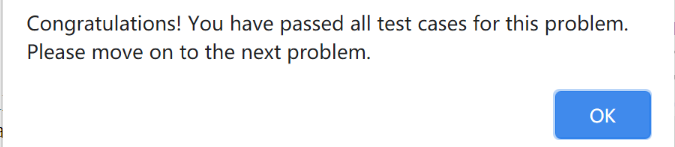
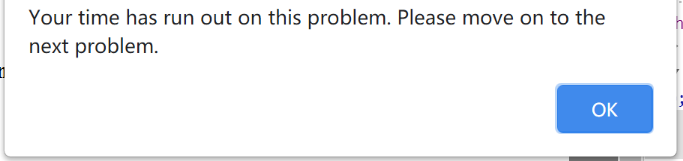

Before we start to work the problems, let's get familiar with the regular expression tool we are going to use. First, let's start with a regular version of the tool.
- 1. Regex input area
- Click in the regex input area to write your own regular expression. The status tag shows if the regex is valid as you type in the area. If your regex is not valid, it will have the error message shown below the input.

- 2. Test string input area
-
The area below contains test strings that will highlight the matches as you type your regex. It uses re.MULTILINE to match your regex with each line. You can type in the regex area to see how the regex you write matches with the strings in this area, or add your own test cases in this area.

If there are grouping in your regex, it will use different colors to highlight the groups captured in your regex.

Don't worry about losing the original test strings provided in this area - by clicking the Reset button, it will reset the test cases to initial state.

- 3. Unit test cases
-
For each problem, there are several testcases that you will need to pass using your regex. Not all of them are provided in the test string area. While typing in the regex input, the tool will check the regex with the testcases automatically. It will show you how many testcases you have passed of all the testcases.

When you have passed all test cases for a problem, you will be prompted to move on to the next problem.

There is a time limit(7 minutes) for each problem. After you have spent 7 minutes for one problem, you will also be prompted to move on to the next problem.

Let's try solving a sample problem first. In this sample problem, please write a regular expression to match "abc".
Note that because this is a tutorial problem, it will not take you to the next problem right after you pass all the testcases.
When you have done exploring the tool, click "Next tutorial page" at the end of this page to move on to the next page of tutorial.